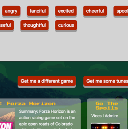
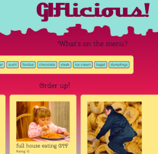

Who are you?
Hi there! I'm Aretha, a full-stack web developer located in Tucson,
Arizona.
I graduated from the University of Arizona in May of 2017 with Bachelor of Arts degrees
in Linguistics and Philosophy, with a focus on Ethics. By the time I had graduated, I was confident
that a lifetime of academia wasn’t for me.
I began working full-time the day after graduation. My position was support-focused on paper, but
when you work for
a very small company, you wind up taking on all kinds of tasks, and I started writing small
snippets of code here and there for the websites we produced.
I had taken a few computer science courses on a whim in college, but coding for the web
felt different. I could create usable, visually appealing applications after a few weeks of
studying.
Over the next few months, I became very comfortable writing HTML and CSS and began
dipping my toes in the wide ocean of JavaScript. In the summer of 2018, I learned that my company
would
be going out of business in December. I figured it was time to sink or swim and decided to enroll
in
the University of Arizona’s Coding Bootcamp.
I’m currently neck-deep in an intense, six-month full-stack curriculum and loving it.
What do you do?
I’m studying to become a full-stack developer. The UA Coding Bootcamp curriculum focuses on the MERN (MongoDB, Express, React, Node) stack, but I aim to develop a familiarity with at least one additional backend language. I am currently proficient with HTML, CSS, and JavaScript, and am comfortable designing and implementing front-end sites with or without Bootstrap or JQuery.
How can we get in touch?
You can reach me at ariswalls@gmail.com, or through GitHub or LinkedIn.
What have you made?
GamePath

Created with three classmates, the GamePath app provides video game and music recommendations
based on inputed moods.
GitHub Repo
GifLicious

GifLicious pulls random GIFs from the GIPHY API based on user-inputed foods and displays them.
GitHub Repo
Kitten Deathmatch
 Kitten Deathmatch is a simple fighting game featuring adorable kittens built
with JQuery.
Kitten Deathmatch is a simple fighting game featuring adorable kittens built
with JQuery.
GitHub Repo